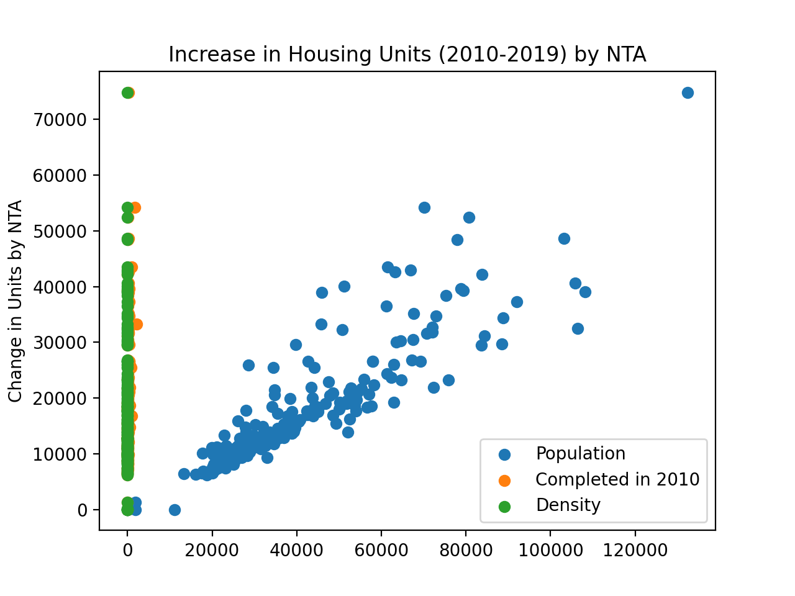
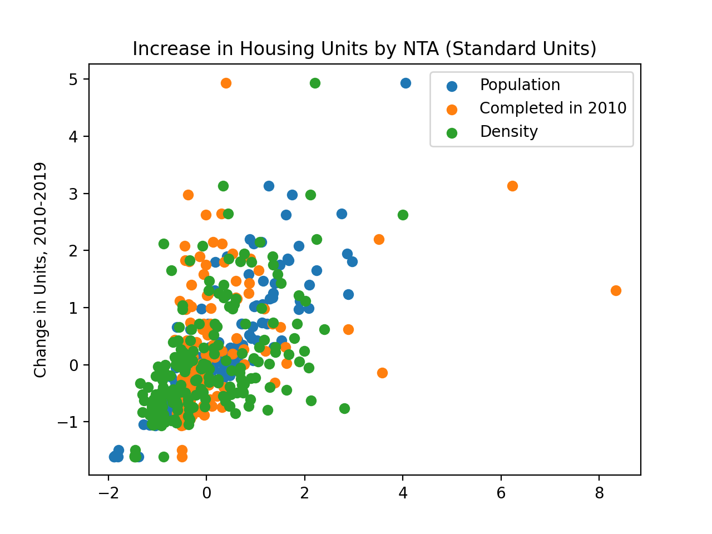

Program 6: Housing Units. Due noon, Thursday, 17 March.
NYC Department of City Planning (DCP) Housing Database contains all approved construction and demolition jobs since 2010. Summary information about it are provided via OpenData NYC. A summary, recorded as net housing units, by Neighborhood Tabulation Areas:
If you would like to create the map above, the code is
housingChoropleth.py
using nta.geojson and
Housing_Database_by_NTA.csv.
What factors are most correlated with the increase in housing units? This program explores which factors are most correlated with the net increase.
The assignment is broken into the following functions to allow for unit testing:
For example, if the housing and population data files are downloaded (and your functions are imported from a file p6), then a sample run of the program:
A way to see the relationships is to plot the data. Plotting the raw data with:

which is difficult to use for comparisons due to the difference in units between the different Series. We can transform the Series into standard units:

Learning Objective: to reinforce Pandas skills by aggregating and cleaning to use in map visualiation, and summary statistics methods in Pandas.
Available Libraries: pandas and core Python 3.6+.
Data Sources: NYC Department of City Planning (DCP) Housing Database and Neighorhood Tabulation Areas.
Sample Datasets: Housing_Database_by_NTA.csv,
NYC_population_by_NTA.csv.
make_housing_df(file_name):
This function takes one input:
The function should open the file file_name: the name of a CSV file containing housing units from OpenData NYC.
file_name as a DataFrame.
If the total is null for a row, that row should be dropped. The column nta2010 should be renamed NTA Code. The resulting DataFrame is returned.
make_pop_df(file_name):
This function takes one input:
The function should open the file file_name: the name of a CSV file containing population counts from OpenData NYC.
file_name as a DataFrame.
Only rows containing data for 2010 should be kept. The resulting DataFrame is returned.
combine_df(housing_df, pop_df, cols):
This function takes three inputs:
Returns a DataFrame that merges the two inputted DataFrames on their common key, housing_df: a DataFrame containing the column NTA Code.
pop_df: a DataFrame containing the column NTA Code.
cols: a list containing a subset of columns of housing_df and pop_df.
NTA Code. The returned DataFrame should include only the columns specified in cols.
compute_density(df, col = 'Density'):
This function takes two inputs:
The function computes a new column, df: a DataFrame containing the columns Population and Shape__Area.
col: a string.
col, that is the quotient of the columns Population and Shape__Area. The resulting DataFrame with this additional column is returned..
most_corr(df, y = 'total', xes = ['Population','Shape__Area','Density','comp2010']):
:
This function takes three inputs:
Returns the column name and Pearson's R correlation coefficient from df: a DataFrame containing the columns listed in y and xes.
xes: list of column names in df.
y: the name of a column in df.
xes that has the highest absolute correlation
with y (i.e. the absolute value of Pearson's R).
convert_std_units(ser):
This function takes one input:
Takes a Series of numeric values and converts to standard units, that is, it computes the mean and standard deviation of ser: a Series.
ser, and for
each s in ser, computes (s - mean)/(standard deviation) and returns the resulting series.
And the first lines would be:
housing_df = p6.make_housing_df('Housing_Database_by_NTA.csv')
print('The housing DataFrame:')
print(housing_df.head())
pop_df = p6.make_pop_df('NYC_Population_By_NTA.csv')
print('The population DataFrame:')
print(pop_df.head())
We can use our next function to combine the DataFrames:
The housing DataFrame:
the_geom OBJECTID ... totaladj total
0 MULTIPOLYGON (((-73.975111993168 40.7353985164... 195 ... 11240 11240
1 MULTIPOLYGON (((-73.91191954925 40.84326617245... 166 ... 13998 13998
2 MULTIPOLYGON (((-73.861380652904 40.8713448048... 37 ... 14622 14622
3 MULTIPOLYGON (((-73.960149163484 40.6289234266... 14 ... 21773 21773
4 MULTIPOLYGON (((-73.938047836582 40.7808378162... 65 ... 48481 48481
[5 rows x 28 columns]
The population DataFrame:
Borough Year ... NTA Name Population
195 Bronx 2010 ... Claremont-Bathgate 31078
196 Bronx 2010 ... Eastchester-Edenwald-Baychester 34517
197 Bronx 2010 ... Bedford Park-Fordham North 54415
198 Bronx 2010 ... Belmont 27378
199 Bronx 2010 ... Bronxdale 35538
And the first lines would be:
cols = list(pop_df.columns) + ['boro','comp2010','comp2015','comp2019','total','Shape__Area']
df = p6.combine_df(housing_df,pop_df,cols)
print(df.head())
print(df.columns) Borough Year FIPS County Code ... comp2019 total Shape__Area
0 Manhattan 2010 61 ... NaN 11240 5.582242e+06
1 Bronx 2010 5 ... 127.0 13998 1.937895e+07
2 Bronx 2010 5 ... 0.0 14622 1.518562e+07
3 Brooklyn 2010 47 ... 457.0 21773 3.579958e+07
4 Manhattan 2010 61 ... -67.0 48481 1.360204e+07
[5 rows x 12 columns]
We can compute a new column, representing population density:
And the relevant columns contain:
df = p6.compute_density(df)
print(df[['NTA Code','Population','Density']])
We can find the columns with the largest absolute correlation coefficient R:
NTA Code Population Density
0 MN50 21049 0.003771
1 BX63 39282 0.002027
2 BX07 35538 0.002340
3 BK43 52835 0.001476
4 MN32 77942 0.005730
.. ... ... ...
190 QN01 38894 0.000973
191 BX37 29250 0.000806
192 QN49 30773 0.000446
193 SI48 25238 0.000501
194 MN31 80771 0.003755
[195 rows x 3 columns]
And the first lines would be:
most_c,r = p6.most_corr(df)
print(f'For the default list of columns, the most correlated is {most_c} with r = {r}.')
comp_y = ['comp2010','comp2015','comp2019']
years_c,y_r = p6.most_corr(df, xes = comp_y)
print(f'For {comp_y}, most correlated is {years_c} with r = {r}.')For the default list of columns, the most correlated is Population with r = 0.4001044380137653.
For ['comp2010', 'comp2015', 'comp2019'], most correlated is comp2010 with r = 0.4001044380137653.
yields
import seaborn as sns
import matplotlib.pyplot as plt
plt.scatter(x=df["Population"],y=df['total'])
plt.scatter(x=df["comp2010"],y=df['total'])
plt.scatter(x=df["Density"],y=df['total'])
plt.title('Increase in Housing Units (2010-2019) by NTA')
plt.ylabel('Change in Units by NTA')
plt.legend(labels=['Population','Completed in 2010','Density'])
plt.show()
gives a plot where the relationships are clearer:
tot_scaled = p6.convert_std_units(df['total'])
plt.scatter(x=p6.convert_std_units(df["Population"]),y=tot_scaled)
plt.scatter(x=p6.convert_std_units(df["comp2010"]),y=tot_scaled)
plt.scatter(x=p6.convert_std_units(df["Density"]),y=tot_scaled)
#plt.scatter(x="comp2010",y='total',data=df)
#sns.lmplot(x="Density",y='total',data=df)
plt.title('Increase in Housing Units by NTA (Standard Units)')
plt.ylabel('Change in Units, 2010-2019')
plt.legend(labels=['Population','Completed in 2010','Density'])
plt.show()